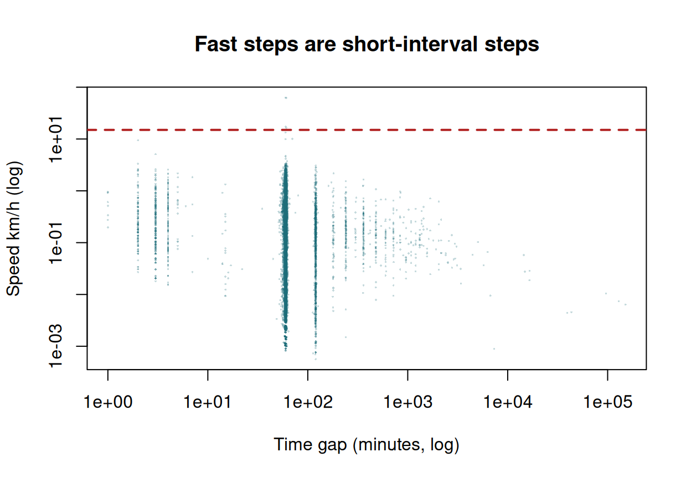
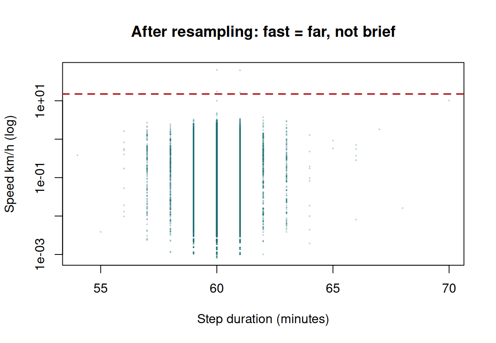
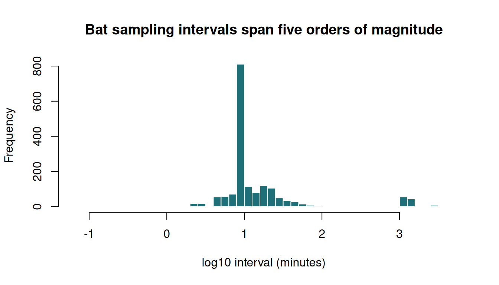
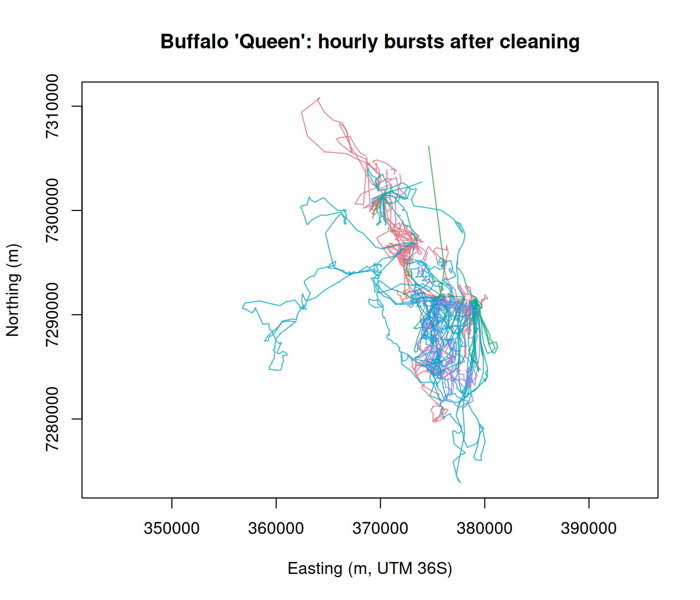

Exercise 3 — Clean, resample and map a track
Class 3 · Theme 2
Goals. Build an amt track; quantify and remove duplicates; find speed outliers and look at them before deleting; resample to regular bursts; discover why the bat data resist all of this; make an interactive map.
Time: ~55 minutes. Packages: amt, dplyr, lubridate, sf, mapview.
Task 1 — Build a track
raw <- read.csv("data/buffalo_kruger.csv.gz") |>
transmute(
id = individual.local.identifier,
t = as.POSIXct(timestamp, tz = "UTC"),
x = location.long,
y = location.lat
)
nrow(raw)
#> [1] 28410Now clean, counting every step. This block is the template for every dataset you will ever handle.
n0 <- nrow(raw)
clean <- raw |> filter(!is.na(x), !is.na(y))
n1 <- nrow(clean)
clean <- clean |> filter(!(x == 0 & y == 0))
n2 <- nrow(clean)
clean <- clean |> distinct(id, t, .keep_all = TRUE)
n3 <- nrow(clean)
data.frame(
step = c("raw", "drop missing coords", "drop (0,0)", "drop duplicate id+time"),
rows = c(n0, n1, n2, n3),
removed = c(NA, n0 - n1, n1 - n2, n2 - n3)
)
#> step rows removed
#> 1 raw 28410 NA
#> 2 drop missing coords 28410 0
#> 3 drop (0,0) 28410 0
#> 4 drop duplicate id+time 24663 3747It goes in your methods section, and it is the first thing a reviewer — or a future you — will want. “We removed 3,747 duplicated records (13.2%)” is a sentence you can defend. “We cleaned the data” is not.
trk <- make_track(clean, x, y, t, id = id, crs = 4326) |>
transform_coords(crs_to = 32736)
trk
#> # A tibble: 24,663 × 4
#> x_ y_ t_ id
#> * <dbl> <dbl> <dttm> <chr>
#> 1 375051. 7285726. 2005-02-17 05:05:00 Queen
#> 2 374851. 7285502. 2005-02-17 06:08:00 Queen
#> 3 374527. 7284538. 2005-02-17 07:05:00 Queen
#> 4 374492. 7284644. 2005-02-17 08:05:00 Queen
#> 5 374392. 7284667. 2005-02-17 09:05:00 Queen
#> 6 374378. 7284668. 2005-02-17 10:05:00 Queen
#> 7 374422. 7284666. 2005-02-17 11:05:00 Queen
#> 8 374430. 7284663. 2005-02-17 12:05:00 Queen
#> 9 374426. 7284662. 2005-02-17 13:05:00 Queen
#> 10 374733. 7284627. 2005-02-17 14:05:00 Queen
#> # ℹ 24,653 more rowsYour turn
1a. What class is trk? What are its columns called? 1b. Confirm the coordinates are now metres.
track_xyt — a tibble with x_, y_, t_ plus the columns you carried along. The coordinates are now six-figure eastings and seven-figure northings: UTM 36S metres.
Task 2 — Sampling rate
trk |>
summarize_sampling_rate_many(cols = "id", time_unit = "hour") |>
mutate(across(where(is.numeric), \(z) round(z, 2)))
#> # A tibble: 6 × 10
#> id min q1 median mean q3 max sd n unit
#> <chr> <dbl> <dbl> <dbl> <dbl> <dbl> <dbl> <dbl> <dbl> <chr>
#> 1 Queen 0.03 1 1 2.45 1 2523. 50.5 4544 hour
#> 2 Gabs 0.03 1 1 1.22 1 723. 12.0 3669 hour
#> 3 Cilla 0.05 1 1 1 1 2 0.05 3527 hour
#> 4 Mvubu 0.03 1 1 0.99 1 9 0.2 2571 hour
#> 5 Toni 0.08 1 1 1.01 1 17 0.26 5776 hour
#> 6 Pepper 0.02 1 1 2.47 1.98 1603. 24.6 4570 hourYour turn
2a. What is the programmed fix interval? 2b. Why is the mean so much larger than the median? 2c. Which individual has the worst gap, and how long is it in days?
The median is 1 hour for every animal — that is the schedule. The mean is inflated by a handful of enormous gaps:
gaps <- trk |>
group_by(id) |>
arrange(t_, .by_group = TRUE) |>
mutate(dt_h = as.numeric(difftime(t_, lag(t_), units = "hours"))) |>
ungroup()
gaps |>
group_by(id) |>
summarise(
median_dt = median(dt_h, na.rm = TRUE),
mean_dt = round(mean(dt_h, na.rm = TRUE), 1),
max_gap_days = round(max(dt_h, na.rm = TRUE) / 24, 1),
gaps_over_1d = sum(dt_h > 24, na.rm = TRUE),
.groups = "drop"
)
#> # A tibble: 6 × 5
#> id median_dt mean_dt max_gap_days gaps_over_1d
#> <chr> <dbl> <dbl> <dbl> <int>
#> 1 Cilla 1 1 0.1 0
#> 2 Gabs 1 1.2 30.1 2
#> 3 Mvubu 1 1 0.4 0
#> 4 Pepper 1 2.5 66.8 40
#> 5 Queen 1 2.4 105. 9
#> 6 Toni 1 1 0.7 0Always report the median. A mean sampling interval is a summary of your collar failures, not of your sampling design.
Task 3 — Hunt the speed outliers
First, look. Then delete.
steps_raw <- trk |>
group_by(id) |>
arrange(t_, .by_group = TRUE) |>
mutate(
dt_h = as.numeric(difftime(t_, lag(t_), units = "hours")),
dist_m = sqrt((x_ - lag(x_))^2 + (y_ - lag(y_))^2),
speed_kmh = (dist_m / 1000) / dt_h
) |>
ungroup() |>
filter(!is.na(speed_kmh))
summary(steps_raw$speed_kmh)
#> Min. 1st Qu. Median Mean 3rd Qu. Max.
#> 0.00000 0.03129 0.15101 0.29545 0.38204 63.10252
sum(steps_raw$speed_kmh > 15)
#> [1] 4Your turn
3a. Look at the fastest steps. Are they long or are they brief?
steps_raw |>
slice_max(speed_kmh, n = 10) |>
transmute(id, t_, dt_min = round(dt_h * 60, 1),
dist_m = round(dist_m), speed_kmh = round(speed_kmh))
#> # A tibble: 10 × 5
#> id t_ dt_min dist_m speed_kmh
#> * <chr> <dttm> <dbl> <dbl> <dbl>
#> 1 Toni 2006-04-20 19:10:00 60 63103 63
#> 2 Toni 2006-04-20 18:10:00 61 63067 62
#> 3 Pepper 2006-05-24 05:06:00 60 17379 17
#> 4 Pepper 2006-05-24 06:07:00 61 16804 17
#> 5 Cilla 2005-07-14 05:35:00 60 13386 13
#> 6 Queen 2005-09-15 07:41:00 70 11783 10
#> 7 Pepper 2006-05-23 15:06:00 60 9898 10
#> 8 Queen 2006-05-26 04:16:00 2 314 9
#> 9 Pepper 2005-10-21 23:02:00 3 255 5
#> 10 Queen 2005-03-26 00:00:00 60 4728 5The worst offenders have tiny time gaps, not large distances — a couple of hundred metres over a minute or two. These are near-duplicate transmissions that survived the exact-duplicate filter.
Confirm it across all the fast steps:
plot(steps_raw$dt_h * 60, steps_raw$speed_kmh, log = "xy",
pch = 16, cex = 0.25, col = adjustcolor("#1f6f78", 0.25),
xlab = "Time gap (minutes, log)", ylab = "Speed km/h (log)",
main = "Fast steps are short-interval steps")
abline(h = 15, col = "firebrick", lty = 2, lwd = 2)
The diagonal edge is the signature: apparent speed is bounded by (GPS error)/dt, so as dt shrinks, apparent speed explodes. This is a time problem masquerading as a speed problem — and deleting the “fast” fixes would remove perfectly good locations.
The correct remedy is to resample onto a regular grid, which is Task 4.
Task 4 — Resample into bursts
This is where almost everyone writes a silent bug. Try the obvious thing first.
# The "obvious" pipeline — grouped by individual
naive <- trk |>
group_by(id) |>
track_resample(rate = hours(1), tolerance = minutes(10)) |>
filter_min_n_burst(min_n = 3) |>
ungroup()
nrow(trk)
#> [1] 24663
nrow(naive)
#> [1] 10395
naive |> count(id, name = "kept")
#> # A tibble: 6 × 2
#> id kept
#> <chr> <int>
#> 1 Cilla 2731
#> 2 Gabs 1921
#> 3 Mvubu 166
#> 4 Pepper 644
#> 5 Queen 1741
#> 6 Toni 3192Look at the per-animal counts. Mvubu goes from 2,572 fixes to a couple of hundred — but Mvubu’s data are fine: 98.8% of that animal’s intervals are within 10 minutes of one hour.
track_resample() walks the rows in time order and builds one grid across everything you hand it. With six animals interleaved, fixes from animal B fall between the grid points of animal A, and most of the track is discarded. No error. No warning. Just a much smaller dataset.
The documented amt idiom is to split, resample each animal separately, and recombine:
trk |> count(id, name = "before") |>
left_join(naive |> count(id, name = "grouped_WRONG"), by = "id") |>
left_join(trk_hr |> count(id, name = "nested_right"), by = "id") |>
mutate(pct_kept = round(100 * nested_right / before, 1))
#> # A tibble: 6 × 5
#> id before grouped_WRONG nested_right pct_kept
#> * <chr> <int> <int> <int> <dbl>
#> 1 Cilla 3528 2731 3518 99.7
#> 2 Gabs 3670 1921 3562 97.1
#> 3 Mvubu 2572 166 2544 98.9
#> 4 Pepper 4571 644 3086 67.5
#> 5 Queen 4545 1741 4354 95.8
#> 6 Toni 5777 3192 5764 99.8Now we keep ~93% of the fixes, which is what an hourly schedule with occasional failures should give.
Your turn
4a. Recompute speeds on the correctly resampled track. Did the problem go away? 4b. What happens if you set tolerance = minutes(1)?
st <- trk_hr |> steps_by_burst()
summary(as.numeric(st$dt_, units = "mins"))
#> Min. 1st Qu. Median Mean 3rd Qu. Max.
#> 54 60 60 60 60 70
sp <- (st$sl_ / 1000) / as.numeric(st$dt_, units = "hours")
round(quantile(sp, c(0.5, 0.9, 0.99, 0.999, 1)), 2)
#> 50% 90% 99% 99.9% 100%
#> 0.15 0.73 1.93 3.05 63.10
sum(sp > 15)
#> [1] 4Every step now spans 50–70 minutes, and the time-artefact speeds are gone: the median is a few hundred metres per hour, which is what a buffalo does.
But a handful of steps remain absurdly fast. These are different animals entirely — look at them:
Sixty-five kilometres in an hour. That is not a short time gap; it is a genuine spatial outlier — a corrupt fix that teleported the animal and back. Now that every step spans the same interval, a fast step really does mean a long distance, and a speed filter finally does what you meant it to do.
plot(as.numeric(st$dt_, units = "mins"), sp, log = "y", pch = 16, cex = 0.3,
col = adjustcolor("#1f6f78", 0.3),
xlab = "Step duration (minutes)", ylab = "Speed km/h (log)",
main = "After resampling: fast = far, not brief")
abline(h = 15, col = "firebrick", lty = 2, lwd = 2)
Compare this with the plot in Task 3: the diagonal artefact edge has gone, and what is left above the line is a small, isolated cluster of real errors.
A tight tolerance discards fixes that arrived a few minutes late — real data you would rather keep. A loose one lets “hourly” steps range from 40 to 80 minutes, weakening every step-length comparison. 5–10% of the interval is a reasonable compromise; state whichever you chose.
Task 5 — Now try the bats
bat <- read.csv("data/bat_safi.csv.gz") |>
transmute(id = individual.local.identifier,
t = as.POSIXct(timestamp, tz = "UTC"),
x = location.long, y = location.lat) |>
filter(!is.na(x), !is.na(y)) |>
distinct(id, t, .keep_all = TRUE)
bat_trk <- make_track(bat, x, y, t, id = id, crs = 4326) |>
transform_coords(crs_to = 32632) # UTM 32N, Switzerland
bat_trk |>
summarize_sampling_rate_many(cols = "id", time_unit = "min") |>
mutate(across(where(is.numeric), \(z) round(z, 1))) |>
head(8)
#> # A tibble: 8 × 10
#> id min q1 median mean q3 max sd n unit
#> <dbl> <dbl> <dbl> <dbl> <dbl> <dbl> <dbl> <dbl> <dbl> <chr>
#> 1 21 1.7 5.2 9 116. 18.8 1605 354. 126 min
#> 2 289 0.1 6 9 127. 18 1623 372. 161 min
#> 3 127 0.1 7.2 10 114. 21.8 1448. 344. 114 min
#> 4 570 0.1 7 11 150. 26 1445. 394. 95 min
#> 5 146 10 10 10 89.7 12.5 1260 299. 32 min
#> 6 42 10 10 10 110 10 1310 345. 26 min
#> 7 168 8 8 8 88.9 10 2764 372. 164 min
#> 8 495 8 8 8 142. 10 4246 591. 103 minYour turn
5a. Try to resample the bats to a regular 15-minute interval. What survives? 5b. What would you do instead?
bat_15 <- bat_trk |>
nest(data = -id) |>
mutate(data = lapply(data, \(d) d |>
track_resample(rate = minutes(15), tolerance = minutes(5)) |>
filter_min_n_burst(min_n = 3))) |>
unnest(cols = data)
c(before = nrow(bat_trk), after = nrow(bat_15))
#> before after
#> 1740 802
bursts <- bat_15 |> count(id, burst_)
c(n_bursts = nrow(bursts), median_length = median(bursts$n), max_length = max(bursts$n))
#> n_bursts median_length max_length
#> 165 4 13
table(bursts$n)
#>
#> 3 4 5 6 7 8 9 10 11 13
#> 57 34 26 20 8 7 5 4 2 2Fewer than half the fixes survive — but the real problem is the shape of what is left. The 802 surviving fixes shatter into 165 bursts with a median length of 4, i.e. three steps each. There is no programmed schedule to recover: fixes arrived whenever a field worker obtained a bearing.
A hidden Markov model (Class 6) estimates transition probabilities between behavioural states. With bursts of three steps, there is almost nothing to transition — you would be asking the model to learn the dynamics of a process from fragments shorter than the process itself.
lags <- bat_trk |>
group_by(id) |>
arrange(t_, .by_group = TRUE) |>
mutate(dt_min = as.numeric(difftime(t_, lag(t_), units = "mins"))) |>
ungroup() |> filter(!is.na(dt_min), dt_min > 0)
hist(log10(lags$dt_min), breaks = 40, col = "#1f6f78", border = "white",
xlab = "log10 interval (minutes)", main = "Bat sampling intervals span five orders of magnitude")
What to do instead. Not: force a regular grid and pretend. The honest options are
- restrict to the questions these data can answer — which sites were used, broad home-range extent, night-time activity periods;
- use methods that tolerate irregular sampling, i.e. continuous-time models (
ctmm) rather than discrete-step models; - treat each night as a separate short burst and analyse only within-night movement.
Recognising which of your datasets is a “buffalo” and which is a “bat” is one of the more valuable things you will take from this course.
Task 6 — An interactive map

mapview() needs a live browser, so the static version is shown here. Run the mapview chunk yourself — zoom in and you will see the collar’s hourly rhythm, and the places where bursts break.
Self-check
Which cleaning order is correct?
Duplicates and near-duplicates create tiny time gaps, and tiny time gaps create enormous apparent speeds. Filter on speed first and you delete good fixes for a fault that belongs to their neighbours.
Remove duplicates, then resample so that every step spans a comparable interval, and then look at what is still implausible. By that point, a genuinely fast step really is a long distance.
You pipe six animals into group_by(id) |> track_resample(rate = hours(1)) and keep 42% of your fixes. The same animals resampled one at a time keep 93%. Why?
track_resample() walks the rows in time order and lays a single regular grid over whatever you give it. Hand it six interleaved animals and most fixes fall between grid points set by some other individual, so they are dropped.
It fails silently — no error, no warning, just a smaller dataset — which is what makes it dangerous. Use the nest() / lapply() / unnest() idiom so each animal gets its own grid.
The general lesson: not every function respects dplyr grouping. When a step drops far more data than you expected, check the per-group counts before you accept the result.
Before Class 4
vignette("p1_basics", package = "amt")- Read Powell & Mitchell (2012), What is a home range? — it is short and it will change how you read the next twenty papers.